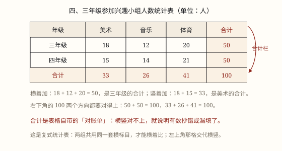

统计表
把统计数据填进有格式的表格：标题说清是什么表，表头说清横竖各是什么，合计替你核对。单式表一组项目，复式表两组以上，才能横着比。
| 所属主题 | 数据的收集与整理 |
|---|---|
| 所属模块 | 统计与概率 |
| 课标学段 | 第二学段（3~4年级） |
| 前置知识 | 数据的收集、整理与分析 |
| 核心素养 | 数据意识应用意识 |
教材定位
人民教育出版社《2024年版》
对应三下第 5 单元「数据的收集与整理」：统计表与数据的分段整理。
课标要求
| 统计与概率·数据的收集、整理与表达 | 经历简单的数据收集和整理、描述和分析的过程，了解简单的收集数据的方法，会呈现数据整理的结果（例39）。 印刷第 38 页 行为动词：经历 |
|---|---|
| 统计与概率·数据的收集、整理与表达 | 通过对数据的简单分析，感受数据蕴含着信息，体会运用数据进行表达与交流的作用。 印刷第 38 页 行为动词：体验 |
说明
调查做完了，纸上是一堆「正」字：谁走路来、谁坐公交。这些记录自己能看懂，交给别人就像天书，过两天自己也会数错。把结果一项一项填进有固定格式的格子——这张表就是统计表。
一张完整的统计表有四样东西。标题：说明这是一张什么表、统计的谁、什么时间、什么单位，通常写成「四、三年级参加兴趣小组人数统计表（单位：人）」。表头：第一行和第一列的那几个格子，左上角那一格最要紧，它要同时交代「横着这一排是什么、竖着这一列是什么」。数据：一格一个数。合计：横着加、竖着加各有一个，用来核对。
只有一组统计项目的叫单式统计表，比如「四(1)班四个兴趣小组的人数」；有两组或两组以上的叫复式统计表，比如把三年级和四年级的兴趣小组人数放进同一张表（图 1）。复式表不是把两张表粘在一起，它让两组数据共用同一套横标目，这样一格一格横着看，就能直接比出差异。
合计是表格自带的「对账单」。横着加得到每个年级的总人数，竖着加得到每个项目的总人数，右下角那个总数两个方向都要对得上。对不上，就说明中间有数抄错了、漏填了，或者加了两次。
统计表的长处是精确、整齐、能算合计、能查错；短处是不直观——一眼看不出谁最多，更看不出一年一年在涨还是在跌。所以它是底稿，图是门面：先用表把数落实，再用图把话说清。
使用场景
校园生活：各班图书借阅量、各年级参加社团的人数、四个兴趣小组的报名情况，一张表就能交上去。
农业生产：两个大棚几种蔬菜的产量、一块地几年的亩产量，用复式表放在一起才好比。
行程出行：共享单车几个站点早高峰的骑行量，站长看表决定往哪调车。
计量与估算：一天四个时刻的体温记录、一周的体重记录，表格式的记录最不容易漏。
购物消费：一个月里各类支出的金额，用表列出来再算合计，比记在手机备忘录里靠谱。
注意点
左上角那一格不能空着，也不能只写「人数」。它要同时说明横竖：横着是「年级」，竖着是「项目」，单位才写在标题后面或这一格里。
同一列必须是同一种量、同一个单位。一格千克、一格斤，加出来的合计就是废数。
合计别再加一遍。算总计的时候，用的是各类的数据，不能把「合计」那一行也加进去。
复式表两组的口径要一致。三年级统计的是四个兴趣小组，四年级也得是这四个，不然横着比没有意义。
表要能自己说话。别人只看标题、表头、数据，就该明白这张表在说什么，不必再问你。
为什么是这样

图 1：复式统计表把两组数据放进同一套横标目里，合计栏横竖都能对账——对不上就是抄错或漏填了
算理推导
为什么必须有表头：表格的信息藏在「行与列的交叉」里。第 2 行第 3 列那个 12，到底是「三年级音乐 12 人」还是「音乐三年级 12 人」，全靠表头交代。左上角那一格同时管住横竖两个方向，它是整张表的「说明书」。
为什么格子要对齐：一列就是一个「通道」。同一列里的数必须同种同单位，眼睛竖着扫下去才能比大小；要是这一列写人数、下一列写金额，扫下去得到的是毫无意义的东西。
为什么要有合计：合计是这张表唯一能自查的数。横着加、竖着加、右下角的总计，三条路必须走到同一个地方（图 1 里 50 + 50 = 100，33 + 26 + 41 = 100）。对不上，就是数据出了错——表替你抓错。
为什么复式表要合成一张：两组数据共用一套横标目，才能「同一列上下对比」：美术 18 人对 15 人，体育 20 人对 21 人，一眼看出四年级体育更强。拆成两张表，眼睛得来回跳，还容易记混。
动手实验
用方格纸自己画一张复式统计表，统计本班男生、女生最喜欢的四类运动（球类、跑步、跳绳、其他）。先画外框：一列写「性别」，四列写项目，最后一列留「合计」；再填数；最后算合计，要求每一行的合计等于该性别人数，每一列的合计等于喜欢这项的总人数，右下角等于全班人数。填完故意擦掉一个格子，看合计怎么对不上——这就是表在替你查错。
按场景的例题
例 1（场景：校园生活） 三个年级的植树节统计表
一张统计表记录三个年级的植树棵数：三年级 80 棵、四年级 95 棵、五年级 70 棵。请算出合计，并说出哪个年级植得最多。
解：把三行数据竖着相加：80 + 95 + 70 = 245（棵）。比较三个数，95 最大。
答：合计 245 棵，四年级植得最多。
例 2（场景：农业生产） 两个大棚的蔬菜产量表
复式统计表记录两个大棚的产量（单位：千克）：一号棚黄瓜 120、番茄 90、生菜 60；二号棚黄瓜 140、番茄 110、生菜 50。黄瓜一共收了多少千克？哪个棚总产量高？
解：黄瓜竖着加：120 + 140 = 260 千克。一号棚 120 + 90 + 60 = 270 千克；二号棚 140 + 110 + 50 = 300 千克。300 > 270。
答：黄瓜共 260 千克；二号棚总产量 300 千克，比一号棚的 270 千克高。
例 3（场景：行程出行） 共享单车四个站点的早高峰骑行量
一张表记录早高峰（7:00—9:00）四个站点的骑行量：地铁口 86 次、小区门口 124 次、学校门口 58 次、公园门口 92 次。合计多少次？如果要调车，该往哪个站点加车？
解：四个数相加：86 + 124 + 58 + 92 = 360 次。124 最大、58 最小，说明小区门口需求最旺、学校门口最冷。
答：合计 360 次。应优先给小区门口加车，学校门口的富余车辆可以调走。
例 4（场景：计量与估算） 一天四个时刻的体温记录表
小舟发烧，妈妈把体温记成一张表：8 时 36.5℃、12 时 37.2℃、16 时 36.9℃、20 时 36.4℃。这一天最高体温是多少？出现在什么时候？从 12 时到 20 时降了多少？
解：比较四个数：37.2 最大，对应 12 时；36.4 最小。从 12 时到 20 时：37.2 - 36.4 = 0.8（℃）。
答：最高 37.2℃，出现在 12 时；12 时到 20 时降了 0.8℃。看表能一下找到最高最低，可「为什么下午会退烧」，表答不了。
常用推论
合计等于各部分之和；横着加和竖着加必须得到同一个总数，这是核对数据的方法。
复式统计表里，同一列可以比较两组的差异，同一行可以看出这一组内部的构成。
总数固定时，一类多，另一类就少——此消彼长，可以互相验算。
统计表适合查准确数值和算合计，不适合一眼看出趋势和占比。
单位必须写在标题或表头里，表里的每个数都共用同一个单位。
易错点
错表格左上角只写了「人数」，横着是年级、竖着是项目都没交代。
为什么错左上角那一格要同时说明横标目和纵标目，只写单位，读表的人不知道「12」指的是哪个年级的哪个项目。
正确左上角写成「年级 / 项目」这样的两行小字，或者把横标目写成「项目」、纵标目写成「年级」，单位放到标题后面。
错算全年级总人数时，把「三年级 50、四年级 50、合计 100」这三行都加起来，得 200。
为什么错合计那一行本身就是前两行加出来的，再加一遍等于把人算了两遍。
正确算总计只用各组的数据：50 + 50 = 100，或者看合计行最后那个数，不必重算。
错复式表里三年级统计了四个兴趣小组，四年级只统计了三个，照样横着比。
为什么错两组统计的项目不一样，同一列比出来的差距是假的——四年级少统计了一项，总数当然小。
正确两组必须用同一套横标目、同一时间段、同一单位，缺的那一项要补上再比。
直观理解
统计表像课程表：横着是星期，竖着是节次，交叉的格子告诉你「周三第三节上什么」。左上角那一格写着「节次 / 星期」，谁看都不会弄错方向。要是把那格空着，整张课程表就成了猜谜。
标题表头加数据，末尾合计来对账；横加竖加都一样，一格一数不慌张。